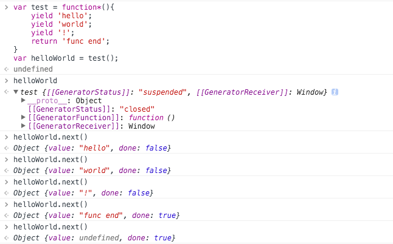
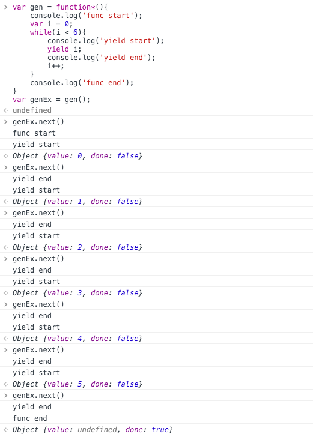

js中的异步流程控制--Promise/Generator/Async/Await
长文预警 ～
异步I/O、事件驱动使JS这个单线程语言在不阻塞的情况下可以并行的执行很多任务，这带来了性能的极大提升，并且更加符合人们的自然认识（烧一壶水，期间你肯定不会等着水烧开再去做别的事，异步才是正常的啊！）。然而异步风格也给流程控制，错误处理带来了更多的麻烦。
一、回调
回调是JS的基础，函数可以作为参数传递并在恰当的时机执行，比如有下面的三个函数：
|
|
如果 f1 中存在异步操作，比如 ajax 请求，并且 f2 需要在 f1 执行完毕之后执行，那么可以使用回调的方式改写函数，如下：
|
|
使用这种方式， f1 的异步操作，不会阻碍程序的运行，并且可以很方便的控制函数的执行过程，显然，我要说但是了。如果你看到下面的代码，估计你不会觉得回调有那么美好了。
|
|
WTF?!
可以看出，回调的缺点很明显，各个函数高度耦合，代码结构混乱，debug 困难，等等。
二、事件监听（观察者模式）
另一种解决异步流程控制的方法是采用事件监听的机制，某个事件的触发不再以某个时机为界限，而是取决于某个事件是否触发。
|
|
唔，很美好的解决方案，但是观察者模式的缺点在其中也体现的很明显，事件的监听和触发散落在不同的地方，程序趋于复杂之后，Event 机制的复杂度也极大提高，明显这不是我们追求的。
三、异步流程控制库
为了优雅的解决异步流程控制的问题，伟大的猿们前赴后继，产出了很多方案，造就了不少优秀的库，包括但不限于 q co async 等。
这些库的具体实现或使用方式不在本文的谈论范围，暂时跳过。
四、新标准、新未来
重点来了！
现在已经是2016年了，ES 的标准一代快过一代，有了 bable 这样的工具，甚至 ES7 都不再是不可触及的 feture了，新的标准当然对异步控制做出了很多努力，让我们一个一个来看。
1、Promise
所谓的 Promise ，就是一个特殊的用于传递异步信息的对象，它代表一个未完成的但是将会完成的操作。也就是说，Promise 代表了某个未来才会知道结果的事件（通常是一个异步操作），并且为这个异步事件提供统一的 API，能够让使用者准确的控制异步操作的每一个流程。
a. 基本理解
一个
Promise对象，存在三种状态，pending(进行中)、resolve(已完成)、reject(已失败)。一个异步操作的开始，对应着Promise的pending状态，异步操作的结束，对应着另两种状态，当异步操作成功时，对应着resolve状态，失败时对应着reject状态。Promise的状态如果发生改变，就不能再被更改，并且，只能由pending向另外两种状态转变，不能逆，也不能resolve和reject互相转化。
b. 基本 API
Promise.resolve()Promise.reject()Promise.prototype.then()Promise.prototype.catch()Promise.all()Promise.race()
c. 详解
创建
Promise实例12345678var promise = new Promise(function(resolve, reject){// async operation ...if( /* async operation success */ ){resolve(value);}else{reject(err);}})构造函数
Promise接受一个函数作为参数，这个函数又有两个类型为方法的参数，resolve、reject。resolve方法用来将promise从pending状态转换到resolve状态，并且将异步操作成功后返回的内容传递出去，reject方法用来将promise从pending状态转换到reject状态，在异步操作失败时调用，并传递错误信息。调用
Promise实例创建后，可以调用then方法，处理异步操作成功或失败的状态。then方法接受两个函数参数，第一个即为创建Promise实例时的resolve函数，第二个则为创建Promise实例时的reject函数，用来分别处理异步操作成功，或失败的后续操作。当然，第二个用来处理失败的参数为可选参数。12345promise.then(function(value){// async operation success}, function(err){// async operation failed})示例1:
sleep函数在很多编程语言中，都有着
sleep函数，延迟程序执行，javascript中可以用setTimeout完成操作的延迟执行，但是还是需要使用回调的方式，现在让我们用Promise来实现。12345678910var sleep = function(ms){return new Promise(function(resolve, reject){setTimeout(resolve, ms);})}// 休眠1000ms后执行sleep(1000).then(function(){console.log('1000s gone')})一个简单的休眠函数就完成了，调用更加方便，也更加直观。
示例2: 异步
Ajax请求12345678910111213141516171819202122232425262728293031323334// 封装下原生 XMLHttpRequest 操作var ajaxExample = function(params){var promise = new Promise(function(resolve, reject){var client = new XMLHttpRequest();client.open(params.type, params.url);client.onreadystatechange = handler;client.send();function handler() {if (this.readyState !== 4) {return;}if (this.status === 200) {resolve(this.response);} else {reject(new Error(this.statusText));}};})return promise;}// 调用ajaxExample({url: '/test',type: 'GET',data: {page: 2}}).then(function(res){console.log(res)}, function(err){console.log(err)})Promise.prototype.then()上面两个简单的示例，展示了
Promise的基本使用方法，让我们再来看看具体的API。then方法除了用于处理Promise实例的成功或失败操作，还会返回一个新的Promise实例，并且将返回值传递给下一层then方法，即：12345678sleep(1000).then(function(){console.log('1000s gone')return '123'}).then(function(val){console.log(val) // 123})这样来看，曾经使用多层嵌套的回调来控制异步流程的代码终于可以下岗了。
Promise.prototype.catch()在
then方法中，第二个参数可以对当前Promise中的错误进行处理，为了统一的错误处理，Promise也为我们提供了一个更加方便的错误处理方式。当一个
Promise实例转变为reject状态的时候，会调用catch中的回调函数，并且把首次reject的错误传递进去。123456var promise = new Promise(function(resolve, reject){reject('error test');})promise.catch(function(err){console.log(err); // error test})catch能够捕获reject主动抛出的错误，同样也能捕获Promise运行中的错误。123456var promise = new Promise(function(resolve, reject){throw new Error('error test');})promise.catch(function(err){console.log(err); // Error: error test(…)})catch捕获错误时具有冒泡属性，即在最后调用catch时，能够捕获到此前所有Promise中的错误。1234567891011ajaxExample({url: '/test',type: 'GET',data: {page: 2}}).then(function(res){console.log(res)}).catch(function(err){// 处理前两个 Promise 中的错误})上面的示例中，最后的
catch方法能够捕获到前两个Promise中任意一个产生的错误。Promise.all()Promise.all方法用于将多个Promise实例，包装成一个新的Promise实例。1var allPromise = Promise.all([p1, p2, p3])Promise.all接受一个由多个Promise实例组成的数组，如果数组中存在非Promise的示例，则allPromise的状态直接为reject。allPromise的状态由p1/p2/p3共同决定，三个全部resolve则allPromise转变为resolve，其中任意一个出现reject，则allPromise转变为reject。Promise.race()Promise.race方法同样用于将多个Promise实例，包装成一个新的Promise实例。1var allPromise = Promise.all([p1, p2, p3])与
Promise.all不同的是，如果p1/p2/p3中有任意一个状态先发生了变化，则allPromise的状态也会跟着转变，并且状态与最先发生状态改变的promise一致。
d. 实际应用
图片加载
123456789101112131415161718192021222324var preloadImg = function(url){return new Promise(function(resolve, reject){var img = new Image();img.onload = resolve;img.onerror = reject;img.src = url;})}// 调用var img1 = preloadImg('./img/test1.png');var img2 = preloadImg('./img/test2.png');var img3 = preloadImg('./img/test3.png');var img4 = preloadImg('./img/test4.png');Promise.all([img1, img2, img3, img4]).then(function(){// all img loaded$('.loading').hide();}).catch(function(err){// catch errconsole.log(err);})Promise风格的文件读写12345678910111213141516171819202122232425262728293031323334353637var fs = require('fs');var readFile = function(path){return new Promise(function(resolve, reject){fs.readFile(path, 'utf8', function(err, data) {if(err) {reject(err);} else {resolve(data);}});})}var writeFile = function(path, data){return new Promise(function(resolve, reject){fs.writeFile(path, data, 'utf-8', function(err, data){if(err){reject(err);} else {resolve(data);}})})}// 调用readFile('./test.json').then(function(data){console.log(data);return data;}).then(function(data){// replace all 'abc' to 'ABC'writeFile('./test.json', data.replace(/abc/g, 'ABC'));}).catch(function(err){console.log(err);})
2、Generator
想象这样的一个场景：
当你执行一个函数的时候，需要在某个时间点停下来等待另一个操作完成，并且拿到这个操作的执行结果，然后继续执行。
这样的场景就是 ES6 的生成器需要解决的问题。
a. 基本理解
生成器本质上是一种特殊的迭代器，迭代最简单的例子如下：
1234for(var i = 0; i < 10; i++){// 每一次循环就是一次迭代，每次迭代都依赖上一次的 i 的值console.log(i);}而生成器作为一种特殊的迭代器就是它的每一次迭代都是可控的，详情下面将具体描述。
生成器形式上是一种函数，只不过比普通的函数
function多一个*，即function*(){}。
b. 基本API
function*(){}yieldGenerator.prototype.next()Generator.prototype.return()Generator.prototype.throw()yield*
c. 详解
Generator函数1234567var test = function*(){yield 'hello';yield 'world';yield '!';return 'func end';}var helloWorld = test();上面的例子就是一个简单的
Generator函数，可以发现，函数声明是多个一个*，并且函数体内出现了多个yield语句和return语句，即该生成器函数存在四种迭代状态：helloworld!return但是当我们执行上述代码的时候，发现并没有即时的执行，返回的也不是它的执行结果，而是一个生成器对象，只有当调用这个生成器对象的
next方法，才会依次的执行函数语句，直到遇到yield语句或return语句。12345helloWorld.next(); // {value: "hello", done: false}helloWorld.next(); // {value: "world", done: false}helloWorld.next(); // {value: "!", done: false}helloWorld.next(); // {value: "func end", done: true}helloWorld.next(); // {value: undefined, done: true}
让我们梳理一下上述代码的执行流程。
第一次调用
next： 生成器函数开始执行，遇到yield语句，暂停执行。next返回一个对象，其中将当前yeild语句的值hello作为返回对象的value字段。done字段为false，迭代未结束。第二次调用
next： 从上一个yield语句开始执行，遇到yield语句，暂停执行。next返回一个对象，其中将当前yeild语句的值world作为返回对象的value字段。done字段为false，迭代未结束。第三次调用
next： 从上一个yield语句开始执行，遇到yield语句，暂停执行。next返回一个对象，其中将当前yeild语句的值!作为返回对象的value字段。done字段为false，迭代未结束。第四次调用
next： 从上一个yield语句开始执行，遇到return语句，结束执行。next返回一个对象，其中将当前return语句的值func end作为返回对象的value字段。done字段为true，迭代结束。第五次调用
next： 生成器函数已经迭代（运行）完毕，next方法始终返回{value: undefined, done: true}让我们再用一个例子来了解一下
yield语句的执行流程：123456789101112var gen = function*(){console.log('func start');var i = 0;while(i < 6){console.log('yield start');yield i;console.log('yield end');i++;}console.log('func end');}var genEx = gen();
首次调用
next，函数开始执行，遇到yield暂停执行，将yield语句后的表达式运行后返回，当作next方法返回值的value字段，依次调用next，从上次yield处继续运行，直到遇到下一个yield，循环往复。yield语句通过上面的例子，
yield语句的特性已经很明显：yield语句会暂停生成器函数的执行yield语句后表达式的运行结果将作为next语句返回值中的value字段
Generator.prototype.next()next语句的返回值有两个字段value和done，value为当前next指向的yield语句的返回值，done标识当前生成器函数是否迭代完毕。next方法还可以接受任意一个参数，该参数将作为上一个yield返回值。123456789101112131415var gen = function*(i){var i = 0;while(true){var reset = yield i;if(reset){i = reset;}i++;}}var genEx = gen();genEx.next(); // {value: 1, done: false}genEx.next(); // {value: 2, done: false}genEx.next(10); // {value: 11, done: false}上面的代码实现了一个无限的迭代器，在每次运行到
yield语句时，如果调用指向此次yield语句的next方法没有参数，那么reset的值始终是undefined。只有在调用next方法传入了参数，此次执行yield语句时，yield语句的返回值将变为next传入的参数。这样的特性能够让我们用同步的方式写出异步执行的代码，具体例子下文。Generator.prototype.return()当我们想在外部结束生成器函数的迭代，可以使用
return方法，并将return方法的参数作为返回值。12345678910var gen = function*(){yield 1;yield 2;yield 3;}var genEx = gen();genEx.next(); // {value: 1, done: false}genEx.return('end'); // {value: 'end', done: true}genEx.next(); // {value: undefined, done: true}Generator.prototype.return()throw方法允许我们在生成器函数外部抛出错误，并在内部捕获。12345678910111213141516171819var gen = function*(){try{yield;}catch(e){console.log('inner error: ' + e);}}var genEx = gen();genEx.next();try{genEx.throw('a');genEx.throw('b');}catch(e){console.log('outer error: ' + e);}// inner error: a// outer error: b第一次抛出错误，被生成器函数捕获到，第二次再抛出，由于
catch语句已经在第一次执行过了，所以内部无法再次捕获错误，从而在外部的try catch语句中可以捕获到错误。yield*如果想在生成器函数中调用另一个生成器函数，将会用到
yield*语句。12345678910111213141516var gen1 = function*(){yield '1';yield '2';}var gen2 = function*(){yield 'a';yield* gen1();yield 'b';}var genEx = gen2();genEx.next(); // {value: "a", done: false}genEx.next(); // {value: "1", done: false}genEx.next(); // {value: "2", done: false}genEx.next(); // {value: "b", done: false}genEx.next(); // {value: undefined, done: true}
d. 实际应用
异步
Ajax请求123456789101112131415var gen = function*(url){// fetch: 原生的ajax请求APIvar result = yield fetch(url);console.log(result);}var genEx = gen('https://api.github.com/users/github');var result = genEx.next();result.value.then(function(res){console.log(res);return res.json();}).then(function(data){genEx.next(data.bio); // How people build software.})上面的代码中，第一次调用
next方法，开始请求，拿到返回结果后，用结果中的value（fetch返回的是一个Promise，所以需要then方法调用），调用下一次then从而执行生成器函数中yield后面的代码。可以看出，虽然生成器函数将异步操作表示的很简洁，但是流程管理并不是很直接，即何时执行第一阶段，何时执行第二阶段并不能很好的向使用者展示。
3、Async/Await
从回调，到 Promise，再到 Generator 函数，js的异步流程控制一直在进化，但是每种解决方法都无形的增加了额外的复杂度，都需要理解底层的运行机制才能很好的运用。
而 ES7 提出的 Async/Await，大概也许可能是 JavaScript 中最好的异步解决方案。
a. 实例
异步读取文件
12345678910111213141516171819202122var fs = require('fs');// 与上文一致var readFile = function(path){return new Promise(function(resolve, reject){fs.readFile(path, 'utf8', function(err, data) {if(err) {reject(err);} else {resolve(data);}});})}// 调用var asyncReadFile = async function(){var file1 = await readFile('./test1.json');var file2 = await readFile('./test2.json');console.log(file1);console.log(file2);}asyncReadFile();如果把上面的代码写成
Geneerator风格，你会发现两者很相似。123456var asyncReadFile = function*(){var file1 = yield readFile('./test1.json');var file2 = yield readFile('./test2.json');console.log(file1);console.log(file2);}对比之后，其实
async函数就是把*替换成async，把yield替换成await。可以说，
async其实就是对Geneerator的语法糖，只不过多包了一层，改进了很多。第一，使用
async函数不用再手动的调用next方法来执行每一次迭代第二，更好的语义，
async表示这个函数是一个异步函数，await表示此后的操作需要等待此步操作完成第三，侵入性更低，原生的
try catch语句能处理错误，async函数中的await语句不用做特殊处理，Promise可以，原始的同步操作也可以第四，更直观、更灵活的调用，
async函数返回的是一个Promise对象，异步操作完成后可以直接用then方法进行下一步操作第五，简单的API，只有
async和await两个API，async用来声明一个异步函数，await用来等待一个异步操作sleep函数上文我们用
Promise实现了一个异步风格的sleep函数，现在让我们看看如何用同步的风格实现并使用它。123456789101112var sleep = function(ms){return new Promise(function(resolve, reject){setTimeout(resolve, ms)})}var sleepEx = async function(){console.log('begin');await sleep(1000);console.log('end after 1000ms');}sleepEx();完美～
b. 如何使用
async await 特性属于ES7的新特性，目前的ES运行环境中并没有实现这样的功能，但是借助 babel，我们可以很方便的使用这些新特性。
这个展开讲又是一个大话题～贴一个 bable 转换代码的网址：Babel transform online
如何在线下使用，自行谷歌，或者，再来一篇？哈哈
五、结束
长长的文章终于结束了，呼～
主要的目的就是对异步流程的解决方案进行一下梳理，加深对js异步特性的理解。最推荐的方式还是ES7的新特性，毕竟是既有的新标准，使用的过程还能学习下 babel 的配置，哈哈。